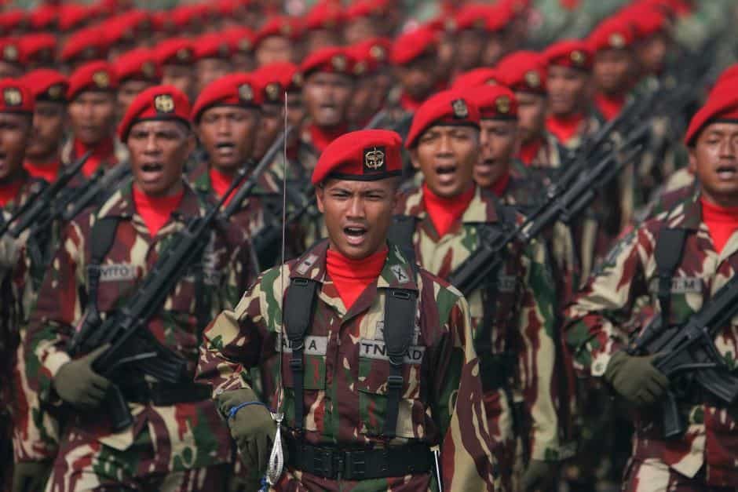

First the SJWs came for the firefighter departments, then they came for the Army, the Air Force, and the Navy…
Military recruiters in Australia are facing punishments from top brass if they do not conform to draconian new gender quotas. For the weekly 50-person recruitment target across the Royal Australian Army, Royal Australian Air Force, and Royal Australian Navy, 35 (70%) of accepted applicants must be women. One of the only exceptions appears to be if some of the recruits are male Australian Aborigines or Torres Strait Islanders.
So why is all this happening? Well, the Australian military wants to double the proportion of female soldiers, from the present 12.5% to 25%, in the next eight years. The solution is to encourage an influx of otherwise physically inferior and unsuitable extra female recruits, who will only be required to pledge two years’ service in roles such as infantryman or artilleryman (yes, -man), compared to six years’ mandated service for men.
The initial physical tests only demand that female recruits in the Royal Australian Army complete four push-ups and 20 sit-ups. After seven weeks of “grueling” training, they will be required to complete–wait for it–an amazing eight push-ups and 45 sit-ups. Physical standards are typically lower in the two other principal services, the Royal Australian Air Force and Royal Australian Navy.
In a classic case of Orwellian doublespeak, one Australian military source told The Daily Telegraph: “Yes, they [men] can apply – but only women will get the job.”
Australia will be in huge peril over the coming 50 years–and this is making it worse

Australia will depend on technological sophistication and soldier training to counteract the threat of much larger military forces, such as Indonesia’s. Yet the influx of physically poor female recruits into the Australian Defence Force will severely undermine this.
Australia’s self-inflicted female soldier problem is one it shares with many other Western countries. The US Marine Corps has already gone down the rabbit hole of so-called “gender-norming,” after a couple of years ago zero female recruits passed particular forms of training. In the United Kingdom, three female “soldiers” received £100,000 (US$130,000) each in compensation after they were “forced” to keep up with male soldiers by marching. The pussy pass runs very deep in Western militaries.
Nonetheless, I do not think that Americans and other Westerners seriously appreciate the terrible geopolitical challenges Australia will face over the coming decades, more so than other Western societies. Sandwiched between an economic relationship with China (our biggest trading partner) and political and cultural links with the United States and Britain, Australia is eventually going to have to make a more decisive choice between the old and the new.
Added to this dilemma is the presence of plenty of other fickle allies/potential future foes, principally very densely-populated and poor Indonesia. Australia’s prosperity, which is even more miraculous in the context of its isolation from the rest of the world and its very lightly-inhabited landmass, will increasingly become a jewel in the eyes of larger would-be aggressors.
All of this underscores the clear and present danger of lowering standards in the Australian Defence Force (ADF). In the case of a serious armed deployment to stave off an enemy attack or, worse yet, an actual full-blown invasion, how can Australia depend on recruits forced to complete only four push-ups in the initial stages of their recruitment? Even eight is deplorably low.
The Australian (wo)manpower disaster cannot be denied. Having only 25 million people, with two-thirds of the adult residents being overweight or obese, Australia has a very modest 60,000 active “soldiers” (many, if not a majority of whom will never expect to perform any fighting), while Indonesia has 435,750. Because Australia’s basically uninhabited northern coast faces Indonesia, it would take minimal effort for Indonesia to land thousands of troops in any conflict.
And what about other possible enemies?
This is about far more than Australia
It’s in China’s best interests to avoid recruiting more women like this who can’t throw a grenade. Why? Because right now the West is doing its fighting for them, with countries like Australia recruiting physically subpar soldiers in bizarre gender experiments.
Do not let the focus on Australia’s military fool you. If you are not an Australian, but live in the West, your nation is either currently caught by the tentacles of gender social-engineering or will be next.
Just as our societies are progressively (pardon the pun) being undermined internally by SJW and other politically correct madness, even our external means of defense from foreign adversaries is rapidly being destroyed as well.
When the shit hits the proverbial fan, how will countries like Australia survive?
Read More: Australian Fire Department’s Female Firefighter Quota Of 50% Will Get People Killed